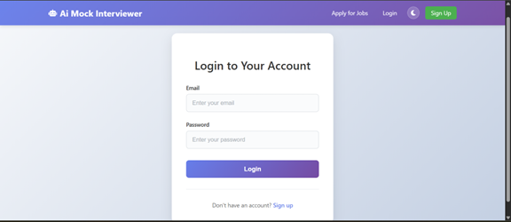
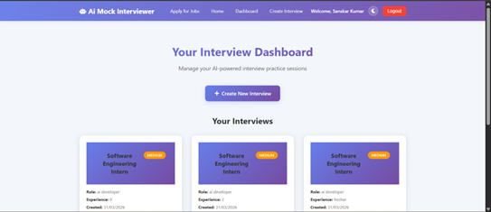
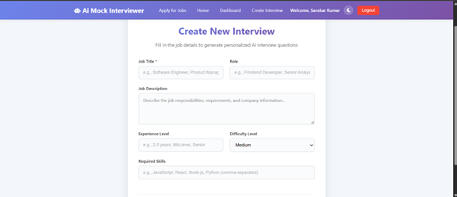
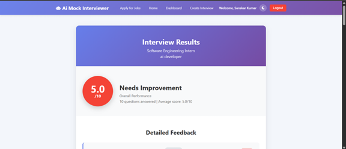

Due to the pace in the development of artificial intelligence, various sectors have been revolutionized, and recruitment and talent acquisition are among these areas. Contemporary enterprises are becoming highly dependent on intelligent systems to facilitate the hiring process, better decision making, and as well as streamline the screening of candidates. Nevertheless, conventional interview preparation was seldom personalized, scalable, and providing immediate feedback, establishing a high disparity between the candidate preparation and the expectations of the industry. These constraints outline the necessity to develop innovative solutions that can replicate the real-world settings of interviews and give practical insights to the users.
This thesis introduces Ai Mock Interviewer, an AI based mock interviewer that imitates natural interview interactions based on state of art natural language processing and large language models. The system uses the Groq API and incorporates the latest models, including LLaMA and Mixtral, to dynamically generate role-specific and difficulty-based interview questions. Along with question generation, the system also provides real-time assessment and candidate response, structured vitality information to the candidate, scoring, and feedback enhancement suggestions to facilitate learning outcomes.
Ai Mock Interviewer is a web-based application that is built on full-stack, with a backend code to support its services: Node.js and Express.js, data storage by MySQL, and an easy-to-use and accessible frontend being written with HTML, CSS, and JavaScript. The secure authentication procedural is carried out using the JSON Web Tokens (JWT) that guarantee the secure management of the user data. In addition, the system includes an analytics module that tracks the activity of the user in the course of time, which allows constant control of the progress, as well as the strength and weaknesses.
The proposed solution will overcome a number of shortcomings of the platforms that are currently used to prepare interviews by providing dynamic content generation, contextual assessment, and a personalized feedback in a scalable, automated way. We have found that users in a testing group had greater engagement and shorter learning cycles, and had better preparedness to interviews. The system is highly promising to work in real-life in educational organizations, placement training programs, corporate training venues, and recruitment systems. On the whole, Ai Mock Interviewer is part of the emerging AI-based educational and assessment tool category, with its solution being smart, time- and people-saving, and usability-friendly in terms of interview preparation.
KEYWORDS: AI, Mock Interview, Natural language processing, Groq API, LLaMA, Recruitment Technology, Full-Stack development, Performance analytics.
The adoption of the Artificial Intelligence (AI) in various dimensions has over the past few years been able to drown the usual operations, particularly in the field of recruitment and talent acquisition. The challenge is being overcome by the implementation of AI based technologies that enable companies in each sector to refine the employment process, enhance the screening process as well as the accuracy of decisions made. Natural Language Processing (NLP), Machine Learning (ML), and Large Language Models (LLM) enabled the automated system to process response of the candidates, predict performances, and even simulate in real-life.
However, despite these changes, most of the preparation of candidates before an interview is rooted in some fixed resources such as a bank of questions, tutorials on the internet and peer practice. These methods are not always effective and fail to provide engagement, individual feedback and practice of interview situation. This has resulted in the fact that in many cases, there is a difference between what candidates were tutored and what they delivered during an interview.
The release of larger AI models, such as LLaMA and Mixtral, has gone to the point of bringing new possibilities to the development of intelligent systems, the chance to pose questions in the context, and evaluate the answers of humans in real-time. According to these trends, the personalized, interactive, and scalable options can be used to close the gap between the preparation and execution steps by means of artificial intelligence-driven mock interview applications.
The proposed system, Ai Mock Interviewer, is planned to use these technologies to design an interactive and holistic interview preparation system replicating the real-life interview conditions and at the same time give valuable feedback.
The conventional interview preparation techniques are marred with a number of limitations which discourage efficient learning and acquisition of skills. These limitations include :
The existing platforms are likely to be either experience based (practice) or the theoretical model, but lack intelligent evaluation systems. In addition, manual mock interviewing is not as scalable and is less available because it requires the involvement of a human.
Thus, a smart, automated system, which can dynamically create interview questions, analyse the answers, and give useful feedback to certain users, is required.
The increase in competition in the job markets and more so those that are technology oriented has made repetitive and effective preparation in interviews very important. Applicants must demonstrate their technical consciousness as well as, communication competence, problem solving competence and assurance.
A mock interview system is an artificially assisted system that fulfils these requirements by:
Students, job seekers and professionals intending to change careers are some of the beneficiaries of the systems. They recreate the actual interview situations, and hence the confidence of the user to perform better.
The design and development of an artificial intelligence-driven counterfeit interviewing platform will become the primary objective of the project helping individuals prepare interviews with the help of smart automation.
The targeted objectives are:
The project has a scope, which is described as follows:
The Ai Mock Interviewer system scope is premised on the adoption of the subsequent web-based service that allows the conduction of the mock-interview by using AI-based services. The system is to be in support of:
These are the some of the assumed features that would be enhanced in the future.
The Ai Mock Interviewer system development is based on a structured software engineering approach, which provides the systematic planning, design, implementation and evaluation. In this way, it would help develop a powerful, scalable, and efficient application since the process is broken down into distinct phases. All the stages add to the overall level of quality, reliability, and functionality of the system, with the user requirements successfully put as a working solution.
The first step will be the analysis of user requirements, system requirements, and system expectations. The stage is aimed at determining the target audience, including students, job seekers and professionals, and determining their problems during interview preparation. Functional requirements (including interview generation, answer evaluations, and analytics), as well as non-functional requirements (including performance, security, and scalability) are defined. This stage forms the basis of coming up with a system that is relevant to the users.
During this step, the general topology of the system is developed depending on the requirements that have been established. The architecture of the system is modular and layered in order to be maintainable and scalable. Important parts of the design are the system architecture, database schema and API structure. The data is arranged in such a way that it can hold the user data, interviews, and analysis efficiently and the API design is such that there is smooth communication among the frontend, backend and AI services. Decision making at this stage should be done properly to minimize complexity when implementation occurs.
The development stage consists of the real execution of the system with the help of the latest web technologies. The backend is written in a language called Node.js and Express, which is used to process server-side code, API calls, and database communication. The application is developed on the frontend using HTML, CSS, and JavaScript in order to make it user-friendly and responsive. The relational database is MySQL that stores structured data. The development process is modular based thus separate parts would be developed and verified individually before combining.
An important feature of the system is the incorporation of artificial intelligence with the Groq API. This stage includes integration of the backend and giant language models including LLaMA and Mixtral to facilitate intelligent functionalities. The AI can be applied to both create context-based interview questions when a user defines their inputs and assess the user responses in real-time. Immediate engineering measures are used to produce the outputs of the AI models in an accurate and relevant manner. This incorporation improves the simulative nature of interview situations of the system.
Testing is performed in order to assure reliability, accuracy and performance of the system. Unit testing and integration testing is done. A unit test is aimed at having the isolation tests that validate separate units (authentication, interview generally generation, evaluation etc). And integration test is aimed at having the communication between various parts of the system to flow smoothly. Extra testing is conducted with checking API responses, user interface behavior, and error handling mechanisms. This stage assists in pointing out and fixing problems prior to implementation.
The last step is to implement the application to put it into practice. The process managers can be used to keep the backend on the server, but the frontend may be deployed on the program of the static hosts. The database may be configured on either a local MySQL or cloud-based server. Correct environment setup and security is configured to avoid un-smooth operation. Deployment is a process that enables the system to be availed to users under real-life situations, which finishes the development lifecycle.
Organization of the Thesis.
The thesis is split into seven chapters in which each section brings about a particular aspect of the project:
The Ai Mock Interviewer system is designed with a modular architecture that divides the overall functionality into well-defined, independent, and interrelated modules. Each module is responsible for a specific aspect of the system, ensuring clarity in design, ease of development, and maintainability. The modular approach also facilitates testing and debugging, as each component can be verified independently before integration.
This chapter provides a comprehensive description of all the project modules, their individual responsibilities, inter-module dependencies, and how they collectively contribute to the functioning of the complete system.
The system comprises the following core modules:
Each module operates as a self-contained unit with well-defined inputs, outputs, and interfaces.
Purpose:
The User Authentication Module handles user registration, login, and secure session management. It ensures that only authorized users can access the system and its features.
Key Functions:
Module Dependencies:
Purpose:
The Interview Management Module is responsible for creating, managing, and organizing interview sessions. It acts as the central coordinator between user preferences and AI-driven functionalities.
Key Functions:
Module Dependencies:
Purpose:
The AI Question Generation Module leverages the Groq API and Large Language Models (LLaMA, Mixtral) to dynamically generate customized interview questions based on user inputs.
Key Functions:
Module Dependencies:
Purpose:
The Answer Evaluation Module processes user responses and provides intelligent, AI-driven feedback. It uses semantic analysis to evaluate answers beyond simple keyword matching.
Key Functions:
Module Dependencies:
Purpose:
The Analytics Module tracks user performance across multiple interview sessions and provides data-driven insights for continuous improvement.
Key Functions:
Module Dependencies:
Purpose:
The Frontend UI Module provides the presentation layer of the system, offering an interactive and user-friendly interface for all system functionalities.
Key Functions:
Module Dependencies:
Purpose:
The Database Management Module handles all data storage, retrieval, and management operations using MySQL as the relational database management system.
Key Functions:
Module Dependencies:
The modules interact with each other in a well-defined sequence to deliver the complete interview experience:
1. The User Authentication Module verifies the user identity and grants access.
2. The Interview Management Module receives user preferences and initiates the session.
3. The AI Question Generation Module produces relevant interview questions.
4. The Frontend UI Module displays questions and accepts user answers.
5. The Answer Evaluation Module processes responses and generates feedback.
6. The Analytics Module records performance data for tracking.
7. The Database Management Module supports all modules with persistent data storage.
This interconnected design ensures a seamless, end-to-end user experience.
This chapter provided a detailed description of all the project modules in the Ai Mock Interviewer system. Each module was described with its purpose, key functions, and dependencies. The modular architecture ensures that the system is maintainable, scalable, and efficient. The clear separation of concerns allows independent development, testing, and enhancement of each module, contributing to the overall robustness and reliability of the system.
The deployment environment defines the infrastructure, tools, platforms, and configurations required to host and run the Ai Mock Interviewer system in a production setting. A well-planned deployment environment is essential to ensure that the application is accessible, reliable, secure, and scalable for end users. This chapter describes the hardware and software requirements, hosting platforms, deployment architecture, and configuration strategies employed for deploying the system.
The Ai Mock Interviewer system follows a distributed deployment architecture where different components of the application are hosted independently to ensure modularity and scalability.
The deployment architecture consists of:
This separation ensures that each component can be independently scaled, updated, and maintained without affecting the other components.
The system does not require specialized hardware and can be deployed on standard computing infrastructure.
Server Requirements:
Client Requirements:
The following software components are required for the deployment environment:
Server-Side Software:
Client-Side Software:
The system components can be deployed on various hosting platforms depending on the scale and requirements.
The deployment process involves the following steps:
1. Set up the server environment with Node.js and required dependencies.
2. Configure environment variables (database credentials, API keys, JWT secrets).
3. Install project dependencies using npm install.
4. Start the application using PM2 for process management and automatic restarts.
5. Configure Nginx as a reverse proxy (optional) for handling HTTP/HTTPS requests.
6. Enable CORS settings for secure frontend-backend communication.
1. Build the frontend application for production (if using a build tool).
2. Deploy the static files to the chosen hosting platform (Netlify, Vercel, or GitHub Pages).
3. Update API base URLs to point to the deployed backend server.
4. Configure custom domain and SSL certificate (if applicable).
1. Set up the MySQL server on the chosen hosting platform.
2. Create the required database and tables using the defined schema.
3. Configure database connection settings in the backend environment variables.
4. Enable backup and recovery mechanisms for data safety.
Proper environment configuration is critical for secure and efficient deployment.
After deployment, the system is tested to verify that all components work correctly in the production environment.
The deployment environment is designed to accommodate future growth:
This chapter described the deployment environment of the Ai Mock Interviewer system, covering the deployment architecture, hardware and software requirements, hosting platforms, deployment process, environment configuration, and scalability considerations. The deployment strategy ensures that the system is accessible, secure, reliable, and scalable, making it ready for real-world usage across educational institutions, training programs, and individual users.
System analysis is one of the most significant phases of the software development life cycle during which there is a detailed investigation of the existing systems, the determination of their shortcomings, and requirements specification of a solution. This stage makes sure that the system that has been developed is technically workable, effective, and is in concurrence with the user requirements and organizational goals. System analysis provides good ground on the development of a robust and effective application by critically examining both functional and non-functional requirements.
In this chapter, a thorough study of existing interview preparation techniques and systems based and their strong and weak points is brought up. It also clearly explains the design factors that should be taken into consideration when designing the new system Ai Mock Interviewer in order to overcome the findings gaps. It has specifications of the requirements, viability analysis as well as comparative analysis between the current system and the proposed system. The given structured analysis makes sure that the given solution is justified, practical, and that it can provide an improved experience during the interview preparation.
There are three major types of existing interview preparation systems depending on the approach and functionality. All the categories have some benefits, but at the same time, they also have some serious limitations which affect their general efficiency as the way of training candidates to act during the interview preparations.
One of the best tools that were used to prepare during interviews is the use of the static learning platforms. These websites will offer ready-to-consume material like:
Interview questions and answers.
These materials can assist users to develop background knowledge and train on regularly posed questions. Nevertheless, its contents are static and do not support the needs and performance of a specific user.
Limitations:
The purpose of peer-based platforms are to emulate the role of an interview setting by allowing users to talk to fellow users or with a mentor. Applicants go through mock interviewing procedures where they are given a feedback about one another by a different person.
Advantages:
Interaction in Real-Time: The users are engaged in a live interview environment which assists in enhancing communication and confidence.
Human Feedback: Feedback that is given by peers or mentors can be specific and situational.
Limitations:
New improvements have resulted in the creation of AI-effective systems to help in particular areas of recruitment and interview preparation. The systems usually pay attention to:
Limitations:
The studies of the current systems show that none of them is able to merge the dynamic interaction, individualized feedback, and scalability successively. None of the aforementioned is scalable or flexible as a static platform, and none of them are complete as fellowship-based systems are. All these restrictions point to the necessity of a complex and intelligent system, such as Ai Mock Interviewer, that will absorb the positive sides of these methods and work to overcome the negative ones.
According to the research on the existing interview preparations systems, a number of critical issues have been discovered that compromise their ability to prepare the candidates to be ready to go in the real-life interview scenarios. These problems indicate the deficiency of the existing solutions and the necessity of a more sophisticated and combined resolution.
The key problems are outlined as follows:
The available platforms, with the exception to few, offer disconnected components of the interview preparation e.g. coding practice or theoretical interview questions, without the actual simulation of the interview process. This is not an integrated workflow and it does not allow users to feel realistic as to an interview environment.
A large number of systems are based on fixed question banks which are not sensitive to system user inputs, job design and performance. This restricts the variety and applicability of questions, minimising the quality of preparation.
The feedback of the existing platforms is usually not meaningful depending on the context of the user reactions. In case there is feedback then it tends to be generic and it does not enable users to learn more about their strengths and weaknesses.
Little is available in terms of monitoring progress of the users. The majority of systems lack comprehensive analytics that assist users to track improvement and detect gaps in skills and assess readiness to interview.
The systems without automation based on human interaction or manual process find it difficult to scale with numerous users. Also it might not be accessible because of limitations of resources or limitations of the platform.
These difficulties suggest with no doubt that an intelligent, scalable, and unified system is required that will incorporate all the necessary functionalities, such as dynamic question generation, real-time assessment, customized feedback, and performance analysis. These concerns develop the basis behind the creation of the proposed system, Ai Mock Interviewer.
Ai Mock Interviewer is the proposed AI-based mock interview system that is meant to address the shortcomings of the current interview preparation systems by bringing on intelligent automation and high-level artificial intelligence methods. The system incorporates a combination of dynamic question generation system, real-time evaluation, and performance analytics into one platform where users can utilize a complete, interactive experience of interview preparation.
Ai Mock Interviewer uses Large Language Models (LLMs) with the Groq API to recreate the experience of realistic interviews. With graphic web technologies and artificial intelligence, the system is scalable, adaptable, and easy to use, thus suitable to a variety of users, such as students, job seekers, and professional users.
The main Characteristics of the Proposed System.
The system produces interview questions that are dependent on the job position, field and the level of difficulty that the user has selected. This makes the content to be relevant and in line with individual preparation requirements.
It is possible to assess user responses on-the-fly with the help of AI, which provides an opportunity to get instant feedback and improve the interview process continuously.
The system also gives extensive and organized feedback, strengths, weaknesses, and improvement suggestions, which can also improve the learning process.
Garnier and Pomer, 2012. Tracking and Analytics Performance: Access to Portal 1:E.
Ai Mock Interviewer keeps an account of user performance over several sessions, thereby allowing an individual to track his progress and also detect areas on which he/she needs to improved.
The system includes secure login and session management with the support of the JSON Web Tokens (JWT) and password encryption that guarantee the privacy and security of the data.
Working Principle of the System
The general system of Ai Mock Interviewer work has its workflow structure that is to be an imitation of a real-life interview process in a structured and interactive manner:
1. User Authentication: The client logs in the system through safe credentials.
2. Input of Interview Preferences: The user will enter information which includes job role, area, and the desired level of difficulty.
3. AI-Based Question Generation: The system requests the AI model through a Groq API that produces a list of applicable interview questions.
4. Response Submission: The interface enables the user to respond to questions generated.
5. AI-Based Evaluation: The system analyses the answers through natural language processing mechanism and provides scores and feedback.
6. Feedback and Analytics Display : The findings, the performance scores and the improvement recommendations are shown to the user and logged to be analysed later.
The suggested system seals major gaps that have been noted in other systems based on the provision of a complete interview preparation platform. It is the combination of automation, personalization and scalability to provide a more efficient and interactive user experience. Ai Mock Interviewer increases the quality and availability of the interview preparation with the help of the artificial intelligence of evaluation combined with the new web technologies.
Ai Mock Interviewer system has a number of notable strengths over the current interview-preparation systems, as it combines artificial intelligence with the current web technologies. These benefits improve the general functionality, scalability as well as the user experience of the system.
The key advantages of the proposed system are as follows:
Ai Mock Interviewer gives the interview process a very personalized individual experience by creating questions according to the job position, field, and level of difficulty chosen by the user. This makes the content to be relevant to career-related goals and the level of skills of the user. Personalized learning can assist in users to address areas that need improvement hence making interview preparation more effective.
The system automates all the interview processes hence there is no human involvement. All processes, including question generation, answer evaluation, provision of feedback, etc., are done through AI. Such automation lowers reliance on the outside world, in addition to maintaining a level of consistency and always being available.
Ai Mock Interviewer has one of the greatest benefits in the form of immediate and structured feedback. The users are provided with immediate feedback on their responses and it includes scores, strengths and weaknesses. This on-the-fly feedback allows quicker learning and allows the user to keep answering questions and improving them.
The system has an architecture that is scalable and has the capacity to serve many users at a time. Ai Mock Interviewer can manage multiple interview sessions without degrading performance as opposed to peer-based systems or those that rely on humans. This renders it applicable in learning institutions and extensive development programmes.
Ai Mock Interviewer also uses an analytics module, which shows the performance of a user over time. It offers factual information on user progress, pointing out strengths and outlining the areas, which need improvement. These lessons enable the users to be more strategic and informed with respect to preparing interviews.
Ai Mock Interviewer is an improved and efficient interview preparation solution by integrating personalization, automation, real-time feedbacks, scalability, and analytics. These benefits fully prove the superiority of the given system compared to the old and current platforms, and it would be an excellent weapon in the hands of modern recruitment preparation.
Functional requirements include the details of the operations and functionality that the system should fulfill as per the needs of users. These requirements outline the behavior of the system based on the interaction of the user and make sure that the necessary features have been implemented correctly.
The system should offer effective and safe user maintainability features to facilitate authorized access and individual user interface.
Role-based interview content customization.
The system should analyze the response of the users based on smart AI-based methods.
The system should be able to track and analyze the user performance to influence the progressive learning and enhancement.
Store the interview history and results.
The system should have the capability to be connected with other AI services so to allow smart features.
Non- functional requirements identify the quality features and performance specifications of the system. These requirements guarantee the efficiency, security and reliability of the system as well as giving an acceptable user experience.
The system has to be high performance in order to enable quick and effective user interaction.
The system has security as a key element in guarding information of the user and in maintaining secure communication.
Password hashing with bcrypt to store user credentials safely.
The system should be in a position to manage the growing trend in the number of users and requests without deterioration in performance.
The system must be user-friendly and accessible to people of different levels of technical skills.
The system should be able to work continuously and be able to deal with unforeseen circumstances.
The feasibility analysis is a necessary stage of system development that determines the possibility to implement the proposed system successfully under the existing restrictions. It evaluates the viability of the system in terms of technical, economic and operational grounds. This is why such analysis makes sure that the presented solution is viable, constant, and able to bring the planned results.
Technical feasibility looks at the availability of the needed technology, tools and skills that could be used to develop and deploy the system.
The suggested system is based on technologies that are widely adopted and that have been established:
MySQL database management.
These technologies have a number of benefits:
Well-documented: This has a lot of documentation and community backing.
Simple to integrate: Interoperable with current web development frameworks and APIs.
Also, the tools and programming languages deployed are common to developers and this lowers the implementation complexity and time.
Conclusion: The suggested system will be technically viable and can be effectively deployed within the resources and technologies available at hand.
Economic feasibility determines the cost-effectiveness of the system and that whether the benefits exceed the expenditure incurred in development and deployment.
Ai Mock Interviewer system is cost effective because of the following reasons:
The major cost factors are:
These are some of the costs incurred although the total expenses in the system are relatively low when weighed against the benefits of the system, like scalability, automation, and the enhanced user experience.
Conclusion: This is an economically viable and cost effective system to develop and deploy.
Operational feasibility determines the ability of the system to work in the real world situation and whether the system will be used by the users.
The Ai Mock Interviewer system is user-friendly and easy to access:
The system can be used by a broad spectrum of users which includes:
The System Requirements Specification (SRS) is a set of hardware and software requirements through which the Ai Mock Interviewer system will be developed and functioning properly. They are necessary to make sure that the system is efficient and user friendly.
The system will not demand high-end hardware and it can be run on the ordinary computing devices.
The system can be accessed by many users without specific hardware and that is allowed by these requirements.
The system is based on widespread software development platforms and tools.
It has compatibility guarantees, ease of deployment, and ease of maintenance because of the use of the commonly supported technologies.
The use case model defines the communication between the user (primary actor) and the system of Ai Mock Interviewer. It provides details of the main features that can be offered to the user and the flow of actions that are taken during the usage of the system.
Primary Actor:
User
Use Cases:
Register/Login into the system.
Use Case Flow:
1. The user gets access to the system through authentic credentials.
2. The user chooses the role and level of difficulty he wants.
3. The system creates interview questions with the help of AI.
4. The user enters questions in response to the questions.
5. The system analyses the responses with an AI-based analysis.
6. The scores and other feedback are presented to the user and stored in the form of the result that could be accessed in the future.
This workflow guarantees the process of interview preparation to be smooth and organised.
In this chapter, there was a system analysis of the Ai Mock Interviewer platform. It has reviewed the current interview preparation systems, the shortcomings that they have and presented the most important challenges among them include: they are not personalized, cannot be scaled, and they are not real-time. According to these results, an all-in-one AI-based solution was suggested.
In the chapter, functional and non-functional requirements were also identified, which left the system to satisfy both the functional requirements and the quality requirements. To determine the feasibility of the system, a feasibility study was carried out to examine its technical, economic, and operational viability, which proved that the system is viable.
On the whole, the analysis shows that Ai Mock Interviewer is a viable, scaled, and effective interview preparation tool in the contemporary world. The system allows a data-driven personalized and interactive experience in learning using modern web technologies and computing artificial intelligence, which makes the system highly applicable in the real world.
The Software Requirements Specification (SRS) document provides a comprehensive and detailed description of the software requirements for the Ai Mock Interviewer system. It serves as a formal agreement between the development team and stakeholders, outlining what the system should do (functional requirements), how well it should perform (non-functional requirements), and the constraints under which it must operate. The SRS ensures that all aspects of the system are thoroughly planned and documented before the development phase begins.
This chapter presents the complete SRS for the Ai Mock Interviewer system, covering the system overview, functional and non-functional requirements, user characteristics, system constraints, assumptions, dependencies, and acceptance criteria.
The Ai Mock Interviewer is an AI-powered web-based application designed to simulate real-world interview experiences. The system generates customized interview questions using Large Language Models (LLaMA, Mixtral) via the Groq API, evaluates user responses in real-time, and provides structured feedback to help users improve their interview skills.
The system is intended for students, job seekers, and professionals seeking to enhance their interview preparation through an interactive, intelligent, and scalable platform.
The purpose of the Ai Mock Interviewer system is to provide an automated, AI-driven mock interview platform that:
The system supports:
Out of Scope:
The Ai Mock Interviewer is a standalone web application that operates independently. It interacts with external AI services (Groq API) for intelligent functionalities but does not depend on any other existing software systems for its core operations.
The system provides the following major functions:
The system is designed for the following user categories:
Users are expected to have basic computer literacy and internet access. No advanced technical knowledge is required to use the system.
The system operates in the following environment:
Assumptions:
Dependencies:
FR-1: User Registration
FR-2: User Login
FR-3: Interview Session Creation
FR-4: AI Question Generation
FR-5: Answer Submission
FR-6: AI-Based Response Evaluation
FR-7: Performance Analytics
FR-8: User Profile Management
NFR-1: Performance
NFR-2: Security
NFR-3: Scalability
NFR-4: Usability
NFR-5: Reliability
NFR-6: Maintainability
The system shall be considered acceptable when:
This chapter provided the complete Software Requirements Specification (SRS) for the Ai Mock Interviewer system. It documented the system's purpose, scope, functional and non-functional requirements, user characteristics, operating environment, external interfaces, constraints, and acceptance criteria. The SRS serves as the foundational reference document that guides the design, development, testing, and deployment of the system, ensuring that all stakeholder expectations are met.
System design is a very important stage in the software development lifecycle that converts the system requirements into well organized, rational and workable architecture. It gives a step-by-step diagram of the system, how different components can interact, and how information can be exchanged between modules, as well as to explain how to arrange functionalities to produce the targeted goals. A quality system does not just need to be correct, but also to be able to scale, maintain and be efficient in its performance.
Design phase is the transition phase between analysis of the problem and implementation of the system by describing internal structure of application. It entails a keen arrangement of system design, module break-down, database design, and communications systems. Proper design choices in this stage contribute to reduction of complexity, enhanced system reliability as well as enhanced future developments.
In this chapter, the complete design of Ai Mock Interviewer system is provided with its general structure, modules design, database structure, API design, and process. It is designed in a modular and layered format so that it is flexible and easy to maintain. Moreover, it focuses on scalability to serve a number of users and on efficient performance to provide real-time AI-driven interactions. By means of such a construct, the system is already ready to implement and introduce into the real world.
Ai Mock Interviewer system adheres to a three-tier architecture, where the application is broken down into three separate layers in line with modularity, scalability and maintenance. In this type of architecture, the user interface, application logic, and data storage are isolated, with each of the layers capable of operating autonomously in harmony with the other.
1. Presentation Layer (Frontend)
The user interface and rendering of the interface is conducted by the presentation layer. It is where the users can get into the system.
Fully developed in HTML, CSS, and JavaScript.
This layer ensures this is done to bring out a smooth and intuitive user experience by allowing effective communication between the user and the system.
2. Application Layer (Backend)
Application layer is the heart of the system because the business logic and processing operations are carried out in the application layer.
3. Data Layer (Database)
The data layer has the responsibility of storing and managing all system data in a format.
Architecture Diagram (Description)
The system overall architecture may be outlined as the following:
This layered architecture has brought about a clear separation of concerns, which has made system of this type easy to manage, to extend and to maintain. It is also scalable as each layer can be very easily upgraded or optimized without having to touch on the whole system.
Ai Mock Interviewer system is divided into several modules, which are charged to manage certain functionalities. This modular design method enhances maintainability, scalability and simplified development as it isolates design issues and enables system parts to be implemented independently.
Purpose:
The authentication module deals with user identity and allows only secure access to the system and integrity of the session.
Components:
Password hashing and verification with bcrypt.
Workflow:
1. The user provides log in or registration information.
2. The server checks the input information.
3. The passwords are hashed and compared to stored values.
4. On a successful authentication a JWT token is created.
5. The token is utilized to authorize the follow up requests to secured routes.
This module will provide the security of data and will not allow an unauthorized person to access the system.
Purpose:
Functionality:
Design Considerations:
Documentation Support Multiple question types supported, such as technical and behavioral questions.
The module is important in order to come up with a realistic and customized interview experience.
Purpose:
The evaluation component interprets the feedback of the users and offers smart feedback, which is based on AI.
Functionality:
Key Feature:
Purpose:
The analytics module will have the task of monitoring the performance of users and offer insights to ensure that there is consistent improvement.
Features:
Stores query outputs and feedbacks.
Outputs:
Accuracy scores and assessment summaries.
Each of the modules is also interrelated to each other to give a unified user experience. The authentication module deals with the secure access, the interview generation module deals with the dynamic questions the evaluation module deals with the response analysis and the analytics module deals with the performance tracking. This combined model brings about the fact that the system will act as a total end-to-end interview preparation platform.
The relational model ensured the database design of the Ai Mock Interviewer system to be consistent, with integrity and to have an efficient management of data. A properly designed database is essential in the storage of information about the users, organization of interviewing and performance analytics. The design aims at reducing the number of occurrences in redundancy and yet efficient data retrieval and update operations.
The system comprises of three major entities User, Interview, and Analytics. All of them are characterized by particular attributes to facilitate the functionality of the system.
1. User Table
User table is used to hold the data of registered users.
2. Interview Table
Interview table contains the information regarding the interview sessions made by the users.
Tables: Interviews tables will consist of the following table:
3. Analytics Table
Performance-related information of every interview session is saved in the Analytics table.
The entity-relationship (ER) model establishes the relationship of the entities of the system.
Relationships:
It is an efficient data storage, retrieval and management of user performance statistics as it enforces referential integrity with the help of this relational structure.
The database is also normalized to avoid redundancy and assure of data consistency. The normalization forms which are used are as follows:
The second normal form is known as class 2NF:
Third Normal Form (3NF):
Normalization increases data integrity, lessens redundancy, and increases query performance.
The database design has a number of strengths:
Ai Mock Interviewer system involves the use of RESTful API to facilitate the interaction between the back and front side of the system. These APIs help to communicate data and handle user requests and provide a fluent communication with the database and AI services. Scalability, ease of use, and effective management of clients and servers communication are guaranteed through the use of REST architecture.
The authentication APIs handle registration, login and access of profiles of users. These terminal points are a guarantee of security in accessing the system.
Creates a new user, and stores authenticated user information in the database.
Validates user authentication and produces a JWT token to be used in managing the session.
Gets the profile information of an authenticated user with a valid JWT token.
These APIs provide end user authentication and authorization in the system.
The APIs which are in charge of interviewing interrogate the formation and management of interviewing.
Establishes a new interview session and activates question generation by the use of AI.
Gets each and every interview session of a given user.
Fetches intensive details on a given interview session.
Receives responses with users and forwards them to AI-based analysis.
These APIs support the dynamism in the interaction between the interview system and the user.
The analytics APIs will give information on the user performance and the usage of the system.
Gets the performance information and analytics, of a particular user.
Gets analytics pertaining to a given interview session.
Gives performance metrics at an aggregate level and across several sessions.
These APIs can facilitate the tracking of performance and data-backed decision-making.
The API design is a common set of principles and features efficiency, security, and scales:
Resource management based on standard HTTP protocols ( GET, POST, PUT, DELETE).
The exchange of data is performed in the format of JSON that is easy to parse.
All the necessary information is included in each request and makes it scalable and even simple.
iw-jwt: Secure Endpoint:
Secured paths that have authentications must also be protected by the use of tokens to ensure that unauthorized users cannot get unidentified access.
This facility also allows system flexibility and scalability.
Supports effective and safe communication of data.
Ai Mock Interviewer system has a well-defined and organised data flow preserving effective communication between the frontend, the backend, the database and the AI services. This flow describes the processing and generation of response of user requests and their delivery.
The sequence of system data flow is given as follows:
1. User Request Submission:
The user accesses the frontend interface with a web browser then makes a request, e.g., logging in or starting an interview, answering.
2. Request Transmission to Backend:
The user request is redirected to the backend server through the endpoint of a RESTful API by the frontend, which transmits the request over HTTP/ HTTPS.
3. Request Validation:
The backend checks the validity of the request that is sent and checks its correctness and security. This encompasses the verification of authentication tokens (JWT), validation of input data as well as testing required parameters.
4. Business Logic Processing:
Once validated the backend processes the request according to the application logic. This can be characterized by the creation of interview time, pre-preparation of prompts to AI or access to user information.
5. AI API Interaction (if required):
The Groq API is exposed to the backend in the case of question generating operations or answer evaluation operations. The query is submitted to the AI model and the output is obtained and computed.
6. Database Interaction:
The backend communicates with MySQL database to access or save data. This involves saving interview sessions, analytics storage and retrieval of user information.
7. Response Generation:
The backend assembly translates the data collected and manipulated, such as the AI products and data in the database, into an organized response.
8. Response Serving to FrontEnd:
The answer is also sent back to the frontend which will then be presented to the user in readable and interactive format.
Secure communication with authenticated requests.
The flow chart shows the workflow of the interview process within Ai Mock Interviewer system, in steps. It describes the way user interaction is handled and how the system and the interaction react at any given step to emulate an interview process in the real world. The flow will also provide a well-portioned and rational flow of activities thus allowing the effective running of the system.
Interview Process Flow
The specific interview process flow is given in detail as follows:
1. Start:
This is initiated when the user logically enters into the system.
2. User Login:
The user gets into the system with justifiable credentials. JWT based security is used to authenticate.
3. Enter Job Details:
The user should add the suitable information like job position, field and desired level of difficulty in interview.
4. Generate Questions:
Instead, the system poses personalized interview questions to the AI model through the Groq API to find answers to those questions based on the available inputs.
5. Display Questions:
The questions generated are presented to the user in the form of the frontend interface.
6. User Answers:
The interviewee gives answers to the interview questions.
7. Submit Answers:
The answer to the questions sent to the system is evaluated by the user.
8. AI Evaluation:
The responses are relayed onto the AI model using the backend, which compares them to the hard criteria of natural language processing and scores and feedback.
9. Display Feedback:
The system shows the evaluation outcomes in terms of the scores, feedback, and evaluation improvement suggestions.
10. Store Analytics:
The performance data comprising of the scores and feedback is saved in the database to be accessed later to be analyzed and tracked.
11. End:
It ends and the user is allowed to see results or to create an additional interview session.
Security is a sensitive phenomenon of the Ai Mock Interviewer system, and sensitive data to be handled with includes user credentials (logins), interview responses, and performance analytics. The system is developed, and the security is provided in a multi-layers way, so that the data can be confidential, intact, and reserved against unauthorized use.
The system contains the following security mechanisms:
PassD: Hashed with bcrypt:<|human|>|human|>Password Hashing with bcrypt:
The user passwords are not kept in plain text. They are instead safely hashed with the bcrypt algorithm then stored in the database. This is a measure to be taken to ensure that even should the database get compromised, the real passwords are not exposed.
The system applies the JSON Web Tokens (JWT) to verify users and control the session. Once successful logging is achieved, token is created which is employed to authenticate user identity during future requests so that only entitled users can gain access to the secured resources.
All user entries are verified at the server-side to deter bad data entries, including SQL, injection and cross site scripting (XSS). This will make sure that only correctly written and safe data is being handled by the system.
Sensitive API routes are protected using authentication middleware. Only requests that contain valid JWT tokens could be used to access restricted functionality, e.g., to view user data, or be able to post interview responses.
Environment variables are used to store sensitive information like database credentials, API keys, and JWT secrets instead of being hardcoded in the code. This minimizes exposure and improves the security of the system generally.
Security design of the system tries to attain the following objectives:
Maintain data integrity and confidentiality.
These security measures have a number of benefits associated with their implementation:
The Ai Mock Interviewer system design is driven by the critical software engineering concepts to make the application efficient, maintainable, and adjustable to meet future needs. These design factors are important in improving performance, usability as well as scalability of a system.
The system will be designed in a modular approach with any functionalities being separated into independent modules like authentication, interview generation, evaluation, and analytics. This division of responsibility enhances the maintainability of code and makes it easier to debug, and enables developers to update or make changes to each specific part of the system.
The system is scaled through the architecture, thus being able to support a growing number of users and requests. Stateless APIs and effective backend design give the system the ability to easily be scaled horizontally by adding more resources as the system is needed.
In the system design, performance is one of the important factors. The system is optimized using:
api request efficient handling
Such optimizations provide a scalable and reactive user experience even in the case of high load.
Usability is strongly considered in the construction of the system when pegging on accessibility to users who may have different technical capabilities.
Simple, easy to use interface.
This helps to increase the user participation and make the platform easy to adopt.
The system is designed to accommodate the subsequent innovations and additions.
This will make sure that the system is not obsolete and can be adjusted to changing trends in technology.
The combination of these design requirements guarantees that the Ai Mock Interviewer system is strong, efficient and future-oriented. Through its emphasis on modularity, scalability, performance, usability, and extensibility, the system is adequately prepared to support the current needs as well as the future needs.
The chapter described the overall design of the Ai Mock Interviewer system covering its architecture, the modular structure of the Ai Mock Interviewer system, the schema of the database, API design, data flow, and the workflow processes. All elements were well provided to facilitate resourceful communication among the frontend, backend, database, and AI services.
This system architecture is based on layers, which facilitate modularity, scalability and maintainability. Responsibilities are strictly outlined in the module design, i.e. authentication, interview generation, evaluation, and analytics, making the system run effectively and efficiently. The information is retained in the form of a database where it is kept, and the API architecture guarantees the smooth flow of communication among the elements of the system.
The data flow and flowchart descriptions as well gives a clear picture of how the user requests are handled and how this system comes up with the responses. The system is also made more robust and reliable through the security measures and design considerations.
This chapter gives the application of the Ai Mock Interviewer system and explains how the proposed design was converted into an application that was fully functional. It gives the development process, tools, and technologies involved in developing the system and how different parts was integrated to come up with the intended functionality.
The system was built with a full-stack, that is, frontend, backend, database, artificial intelligence implemented in a single solution. The front and backend exchange experiences between interactive user interface and business logic and API communication as well as data processing. The database that is positioned on the cloud for storing structured data is MySQL and the API that supports intelligent capabilities, including question generation and assessing responses is called Groq.
Its implementation focuses on modular development where individual components may be developed and tested and maintained separately. It is also concerned with effective API management in order to facilitate the smooth communication between layers of a system, protection of data by logical authentication with the help of JWT, and integration with AI services in order to provide the real-time processing.
In general, this chapter shows the way the conceptual design of Ai Mock Interviewer is being put into practical use and makes it a scalable, secure, and efficient system that can bring AI-driven experiences of an interview.
The environment in which it is developed is very imperative in making sure that the Ai Mock Interviewer system gets implemented, tested and rolled out correctly. The properly supplied environment also allows the effective coding, debugging, and connectivity of different system parts, and thus, the overall productivity of the development process and the stability of the system.
Modern web-based tools, tools, and frameworks that have been integrated have been used to build the system which has been designed to support scalability, performance, and are easy to integrate.
Tools and Technologies Ensured.
Ai Mock Interviewer system was developed using the following technologies:
The server-side logic, API requests, and communication between the frontend and other API related to the database and AI were developed based on Node.js and Express.js.
The design and implementation of the system were created through HTML, CSS and JavaScript to have a responsive and user-friendly interface to interact with the system.
The relational database management system that was applied to store user information, interview sessions, and analytics consisted of MySQL.
Advanced Large Language Models like LLaMA and Mixtral were also built into Groq API to help generate interview questions and assess user answers.
The secure session management involved the use of JSON Web Tokens (JWT), password hashing involved the use of bcrypt, and the storage of credentials involved using the bcrypt.
express-validator was employed to confirm the user inputs as well as verify the integrity of data before processing.
The version control was also controlled through Git, which allows managing the code easily, cooperating with other team members, and monitoring its changes during the process.
The development and testing were assisted with the following tools:
Mainly used as the code editor because it has a rich code editor, extensions and has debugging features.
Used to design the database, manage and query the database.
It is used to test API endpoints, provide a check on the request-response loops, or debug the backend functionality.
The development environment chosen has a number of benefits:
- easily integrates AI services.
The backend is the heart of the Ai Mock Interviewer system and serves the purpose of processing the logic of the business, communication on the APIs, human request processing and communication with the database and the AI services. It is created with Node.js and Express which makes it scalable, efficient, and can be integrated easily with the external services, such as the Groq API.
Experts apply the Express.js framework to implement the backend server as a lightweight and adaptive framework with which to design web applications and API.
Key Features:
Example Request Flow:
This hierarchy has allowed the positioning of concerns clearly and the effective processing of user requests.
The routing system is structured into disaggregated modules to improve the readability, scalability and the maintainability level of the codebase. Every route file takes care of a given set of functions.
Code :
const express = require('express');
const AuthController = require('../controllers/AuthController');
const { authenticateToken } = require('../middleware/auth');
const router = express.Router();
// Routes
router.post('/signup', AuthController.validateSignup, (req, res) => {
const controller = new AuthController(req.db);
controller.signup(req, res);
});
router.post('/login', AuthController.validateLogin, (req, res) => {
const controller = new AuthController(req.db);
controller.login(req, res);
});
router.get('/profile', authenticateToken, (req, res) => {
const controller = new AuthController(req.db);
controller.getProfile(req, res);
});
module.exports = router;
Code :
const express = require('express');
const InterviewController = require('../controllers/InterviewController');
const { authenticateToken } = require('../middleware/auth');
const router = express.Router();
// Initialize controller with db connection
let interviewController;
router.use((req, res, next) => {
if (!interviewController) {
interviewController = new InterviewController(req.db);
}
next();
});
// Routes
router.post('/', authenticateToken, InterviewController.validateInterviewData, (req, res) => {
const controller = new InterviewController(req.db);
controller.createInterview(req, res);
});
router.get('/', authenticateToken, (req, res) => {
const controller = new InterviewController(req.db);
controller.getUserInterviews(req, res);
});
router.get('/:id', authenticateToken, (req, res) => {
const controller = new InterviewController(req.db);
controller.getInterview(req, res);
});
router.post('/answer', authenticateToken, (req, res) => {
const controller = new InterviewController(req.db);
controller.submitAnswer(req, res);
});
router.post('/:id/finalize', authenticateToken, (req, res) => {
const controller = new InterviewController(req.db);
controller.finalizeInterview(req, res);
});
module.exports = router;
Performance tracking and analytics retrieval Analytics.js: Performance tracking and analytics data retrieval.
Every path is connected with its own controller, there is no spin-up of request processing and business within one body.
The implementation of the main business logic of the system is in the hands of controllers. They receive and process incoming requests, connect to the database and AI services and produce the corresponding responses.
Code :
const User = require('../models/User');
const { body, validationResult } = require('express-validator');
const logger = require('../utils/logger');
class AuthController {
constructor(db) {
this.userModel = new User(db);
}
// Validation rules
static validateSignup = [
body('name').trim().isLength({ min: 2 }).withMessage('Name must be at least 2 characters'),
body('email').isEmail().normalizeEmail().withMessage('Invalid email'),
body('password').isLength({ min: 6 }).withMessage('Password must be at least 6 characters')
];
static validateLogin = [
body('email').isEmail().normalizeEmail().withMessage('Invalid email'),
body('password').exists().withMessage('Password is required')
];
// Signup
async signup(req, res) {
try {
const errors = validationResult(req);
if (!errors.isEmpty()) {
return res.status(400).json({ errors: errors.array() });
}
const { name, email, password } = req.body;
// Check if user already exists
const existingUser = await this.userModel.findByEmail(email);
if (existingUser) {
return res.status(409).json({ error: 'User already exists' });
}
// Create user
const userId = await this.userModel.create(name, email, password);
const user = await this.userModel.findById(userId);
const token = this.userModel.generateToken(user);
res.status(201).json({
message: 'User created successfully',
user: { id: user.id, name: user.name, email: user.email },
token
});
} catch (error) {
logger.error('Signup error', {
citation: 'AuthController.signup',
meta: { error }
});
res.status(500).json({ error: 'Internal server error' });
}
}
// Login
async login(req, res) {
try {
const errors = validationResult(req);
if (!errors.isEmpty()) {
return res.status(400).json({ errors: errors.array() });
}
const { email, password } = req.body;
// Find user
const user = await this.userModel.findByEmail(email);
if (!user) {
return res.status(401).json({ error: 'Invalid credentials' });
}
// Verify password
const isValidPassword = await this.userModel.verifyPassword(password, user.password);
if (!isValidPassword) {
return res.status(401).json({ error: 'Invalid credentials' });
}
// Generate token
const token = this.userModel.generateToken(user);
res.json({
message: 'Login successful',
user: { id: user.id, name: user.name, email: user.email },
token
});
} catch (error) {
logger.error('Login error', {
citation: 'AuthController.login',
meta: { error }
});
res.status(500).json({ error: 'Internal server error' });
}
}
// Get profile
async getProfile(req, res) {
try {
const user = await this.userModel.findById(req.user.id);
if (!user) {
return res.status(404).json({ error: 'User not found' });
}
res.json({ user });
} catch (error) {
logger.error('Get profile error', {
citation: 'AuthController.getProfile',
meta: { error }
});
res.status(500).json({ error: 'Internal server error' });
}
}
}
module.exports = AuthController;
Handles user authentication, signing up, passwords and user profile retrieval.
Code:
const Interview = require('../models/Interview');
const Analytics = require('../models/Analytics');
const OpenAI = require('openai');
const { body, validationResult } = require('express-validator');
const logger = require('../utils/logger');
class InterviewController {
constructor(db) {
this.interviewModel = new Interview(db);
this.analyticsModel = new Analytics(db);
this.openai = new OpenAI({
apiKey: process.env.GROQ_API_KEY,
baseURL: process.env.GROQ_BASE_URL
});
}
// Validation rules
static validateInterviewData = [
body('jobTitle').trim().isLength({ min: 1 }).withMessage('Job title is required'),
body('jobDescription').optional().trim(),
body('role').optional().trim(),
body('experience').optional().trim(),
body('skills').optional(),
body('difficulty').optional().isIn(['Easy', 'Medium', 'Hard']).withMessage('Invalid difficulty level')
];
// Create interview
async createInterview(req, res) {
try {
const errors = validationResult(req);
if (!errors.isEmpty()) {
return res.status(400).json({ errors: errors.array() });
}
const interviewData = req.body;
const userId = req.user.id;
// Create interview
const interviewId = await this.interviewModel.create(userId, interviewData);
// Generate questions using AI
const questions = await this.generateQuestions(interviewData);
// Add questions to database
for (const question of questions) {
await this.interviewModel.addQuestion(interviewId, question.text, question.type);
}
// Log analytics
await this.analyticsModel.logAction(userId, 'interview_created', interviewData, interviewId);
res.status(201).json({
message: 'Interview created successfully',
interviewId,
questions
});
} catch (error) {
logger.error('Create interview error', {
citation: 'InterviewController.createInterview',
meta: { error }
});
res.status(500).json({ error: 'Internal server error' });
}
}
// Get user interviews
async getUserInterviews(req, res) {
try {
const userId = req.user.id;
const interviews = await this.interviewModel.getByUserId(userId);
res.json({ interviews });
} catch (error) {
logger.error('Get interviews error', {
citation: 'InterviewController.getUserInterviews',
meta: { error }
});
res.status(500).json({ error: 'Internal server error' });
}
}
// Get interview details
async getInterview(req, res) {
try {
const { id } = req.params;
const userId = req.user.id;
const interview = await this.interviewModel.getById(id);
if (!interview || interview.user_id !== userId) {
return res.status(404).json({ error: 'Interview not found' });
}
const questions = await this.interviewModel.getQuestions(id);
const answers = await this.interviewModel.getAnswers(id);
res.json({ interview, questions, answers });
} catch (error) {
logger.error('Get interview error', {
citation: 'InterviewController.getInterview',
meta: { error }
});
res.status(500).json({ error: 'Internal server error' });
}
}
// Submit answer
async submitAnswer(req, res) {
try {
const {
questionId,
answer,
transcript,
videoBase64,
videoMimeType,
deferEvaluation = true
} = req.body;
const userId = req.user.id;
// Get question details
const [questionRows] = await req.db.execute(
'SELECT q.*, i.* FROM questions q JOIN interviews i ON q.interview_id = i.id WHERE q.id = ?',
[questionId]
);
const question = questionRows[0];
if (!question || question.user_id !== userId) {
return res.status(404).json({ error: 'Question not found' });
}
let evaluation = null;
if (!deferEvaluation) {
evaluation = await this.evaluateAnswer(question.question_text, answer, question, question.type);
}
const safeMimeType = typeof videoMimeType === 'string' ? videoMimeType : null;
let videoBuffer = null;
if (typeof videoBase64 === 'string' && videoBase64.length > 0) {
videoBuffer = Buffer.from(videoBase64, 'base64');
}
// Save answer
await this.interviewModel.addOrUpdateAnswer(
questionId,
answer,
evaluation?.feedback || null,
evaluation?.score || null,
transcript || null,
videoBuffer,
safeMimeType
);
// Log analytics
await this.analyticsModel.logAction(
userId,
'answer_submitted',
{ questionId, deferred: deferEvaluation, score: evaluation?.score || null },
question.interview_id
);
const answerCount = await this.interviewModel.getAnswerCountByInterview(question.interview_id);
res.json({
message: 'Answer submitted successfully',
evaluation,
answerCount
});
} catch (error) {
logger.error('Submit answer error', {
citation: 'InterviewController.submitAnswer',
meta: { error }
});
res.status(500).json({ error: 'Internal server error' });
}
}
async finalizeInterview(req, res) {
try {
const { id } = req.params;
const userId = req.user.id;
const interview = await this.interviewModel.getById(id);
if (!interview || interview.user_id !== userId) {
return res.status(404).json({ error: 'Interview not found' });
}
const questions = await this.interviewModel.getQuestions(id);
const answers = await this.interviewModel.getAnswers(id);
if (answers.length === 0) {
return res.status(400).json({ error: 'No answers found to evaluate' });
}
for (const answer of answers) {
if (answer.score !== null && answer.ai_feedback) {
continue;
}
const evaluation = await this.evaluateAnswer(
answer.question_text,
answer.user_answer || answer.transcript_text || '',
interview,
answer.type
);
await this.interviewModel.updateAnswerEvaluation(answer.id, evaluation.feedback, evaluation.score);
}
await this.analyticsModel.logAction(
userId,
'interview_finalized',
{ interviewId: id, answersEvaluated: answers.length, questionCount: questions.length },
id
);
res.json({ message: 'Interview evaluated successfully' });
} catch (error) {
logger.error('Finalize interview error', {
citation: 'InterviewController.finalizeInterview',
meta: { error }
});
res.status(500).json({ error: 'Internal server error' });
}
}
// Generate questions using Groq API
async generateQuestions(interviewData) {
const prompt = `Generate 10 interview questions for the following job:
Job Title: ${interviewData.jobTitle}
Job Description: ${interviewData.jobDescription || 'Not provided'}
Role: ${interviewData.role || 'Not specified'}
Experience Required: ${interviewData.experience || 'Not specified'}
Skills: ${interviewData.skills || 'Not specified'}
Difficulty: ${interviewData.difficulty || 'Medium'}
Please generate:
- 4 Technical questions
- 3 Behavioral questions
- 3 Scenario-based questions
Format the response as a JSON array of objects with "text" and "type" fields.
Example: [{"text": "Question here", "type": "Technical"}]`;
try {
const response = await this.openai.chat.completions.create({
model: 'mixtral-8x7b-32768',
messages: [{ role: 'user', content: prompt }],
temperature: 0.7,
max_tokens: 2000
});
const content = response.choices[0].message.content;
const parsed = this.extractJsonArray(content);
const normalized = this.normalizeQuestions(parsed);
if (normalized.length === 10) {
return normalized;
}
const fallback = this.getFallbackQuestions();
return [...normalized, ...fallback].slice(0, 10);
} catch (error) {
logger.error('AI question generation error', {
citation: 'InterviewController.generateQuestions',
meta: { error }
});
return this.getFallbackQuestions();
}
}
// Evaluate answer using Groq API
async evaluateAnswer(question, answer, interviewData, questionType = 'Technical') {
const prompt = `Evaluate the following interview answer:
Question: ${question}
Question Type: ${questionType}
Answer: ${answer}
Job Context:
- Title: ${interviewData.job_title}
- Description: ${interviewData.job_description}
- Required Experience: ${interviewData.experience}
- Skills: ${interviewData.skills}
Please provide:
1. A score from 0-10 (where 10 is excellent)
2. Detailed feedback on the answer
3. Suggestions for improvement
Format as JSON: {"score": 8.5, "feedback": "Detailed feedback here", "suggestions": "Suggestions here"}`;
try {
const response = await this.openai.chat.completions.create({
model: 'mixtral-8x7b-32768',
messages: [{ role: 'user', content: prompt }],
temperature: 0.3,
max_tokens: 1000
});
const content = response.choices[0].message.content;
return JSON.parse(content);
} catch (error) {
logger.error('AI answer evaluation error', {
citation: 'InterviewController.evaluateAnswer',
meta: { error }
});
return {
score: 5.0,
feedback: 'Your answer provides a basic response. Consider providing more specific examples and details.',
suggestions: 'Try to include concrete examples from your experience and explain your thought process.'
};
}
}
extractJsonArray(content) {
const trimmed = content.trim();
try {
return JSON.parse(trimmed);
} catch (_) {
const start = trimmed.indexOf('[');
const end = trimmed.lastIndexOf(']');
if (start !== -1 && end !== -1 && end > start) {
const jsonPart = trimmed.slice(start, end + 1);
return JSON.parse(jsonPart);
}
return [];
}
}
normalizeType(type = '') {
const value = String(type).toLowerCase();
if (value.includes('tech')) return 'Technical';
if (value.includes('behav')) return 'Behavioral';
if (value.includes('scenario')) return 'Scenario';
return 'Technical';
}
normalizeQuestions(rawQuestions) {
if (!Array.isArray(rawQuestions)) {
return [];
}
return rawQuestions
.map((item) => ({
text: item?.text || item?.question || item?.question_text || '',
type: this.normalizeType(item?.type)
}))
.filter((item) => item.text && item.text.trim().length > 0);
}
getFallbackQuestions() {
return [
{ text: 'Can you tell me about yourself?', type: 'Behavioral' },
{ text: 'What are your strengths and weaknesses?', type: 'Behavioral' },
{ text: 'Why are you interested in this position?', type: 'Behavioral' },
{ text: 'Describe a challenging project you worked on.', type: 'Scenario' },
{ text: 'How do you handle tight deadlines?', type: 'Scenario' },
{ text: 'Tell me about a time you failed and what you learned.', type: 'Scenario' },
{ text: 'What programming languages are you proficient in?', type: 'Technical' },
{ text: 'Explain your experience with databases.', type: 'Technical' },
{ text: 'How do you approach debugging?', type: 'Technical' },
{ text: 'What is your experience with version control?', type: 'Technical' }
];
}
}
module.exports = InterviewController;
Handles user question generation, user answer processing, and interview session creation using AI.
Code :
const Analytics = require('../models/Analytics');
const logger = require('../utils/logger');
class AnalyticsController {
constructor(db) {
this.analyticsModel = new Analytics(db);
}
// Get user analytics
async getUserAnalytics(req, res) {
try {
const userId = req.user.id;
const analytics = await this.analyticsModel.getUserAnalytics(userId);
res.json({ analytics });
} catch (error) {
logger.error('Get user analytics error', {
citation: 'AnalyticsController.getUserAnalytics',
meta: { error }
});
res.status(500).json({ error: 'Internal server error' });
}
}
// Get interview analytics
async getInterviewAnalytics(req, res) {
try {
const { interviewId } = req.params;
const analytics = await this.analyticsModel.getInterviewAnalytics(interviewId);
res.json({ analytics });
} catch (error) {
logger.error('Get interview analytics error', {
citation: 'AnalyticsController.getInterviewAnalytics',
meta: { error }
});
res.status(500).json({ error: 'Internal server error' });
}
}
// Get overall analytics (admin only)
async getOverallAnalytics(req, res) {
try {
// In a real app, you'd check if user is admin
const analytics = await this.analyticsModel.getOverallAnalytics();
res.json({ analytics });
} catch (error) {
logger.error('Get overall analytics error', {
citation: 'AnalyticsController.getOverallAnalytics',
meta: { error }
});
res.status(500).json({ error: 'Internal server error' });
}
}
}
module.exports = AnalyticsController;
reads and writes performance information, such as scores, feedback and progress statements.
This stratified structure enhances better organization of codes and makes it much easier to debug as well as make future changes.
The middleware is important in the facilitation of security, validation, and error handling in the system. It can be described as a layer between the requests and the controllers.
Med have been used:
Code :
const jwt = require('jsonwebtoken');
const authenticateToken = (req, res, next) => {
const authHeader = req.headers['authorization'];
const token = authHeader && authHeader.split(' ')[1]; // Bearer TOKEN
if (!token) {
return res.status(401).json({ error: 'Access token required' });
}
jwt.verify(token, process.env.JWT_SECRET, (err, user) => {
if (err) {
return res.status(403).json({ error: 'Invalid or expired token' });
}
req.user = user;
next();
});
};
module.exports = {
authenticateToken
};
Checks the JWT tokens to make sure that only authorized users can get access to the protected routes.
Uses express-validator to authenticate user inputs and filter out invalid or malicious data using the express-validator.
Mitigates and manages errors too well and provides the right response and messages with the help of HTTP.
The middleware will help to provide security, reliability, and robustness of the system under different conditions.
The Ai Mock Interviewer system frontend holds the duty of offering an interactive and easy-to-use interface that allows the user to engage with the system and make use of the functionalities it entails. It serves as the presentation layer which allows the user to communicate with the backend services easily.The front end is built on standard web technologies, i.e. HTML, CSS and JavaScript, and makes it simple, responsive and cross platform compatible.
The user interface is simplified and customized to be user-friendly and easy to use. The aim is to ensure that users experience an easy to use interface that can give them the chance to navigate the system with the lowest effort.
Key Design Features:
The design makes users interact with the system easily without the need of some technical background.




The frontend will comprise of a few pages and elements that facilitate various functions:
Enables users to register and authenticate in a secure manner.
The primary interface in which users can initiate an interview and capabilities.
Displays pose questions and enable viewers to make their responses.
Results and Analytics Page:
Provides feedback, scores, and performance information.
All the elements are meant to offer a well-organised working process to the user.
JavaScript is adopted to carry dynamic interaction and contact with the backend APIs.
Key Functionalities:
This makes the application dynamically act and reacts fast to user actions.
The frontend is connected to the backend via RESTful APIs.
Receives feedback like created questions and assessment outcomes.
The integration guarantees the smooth communication of the data between the server and the client.
The Ai Mock Interviewer frontend will have a clean, interactive and efficient interface, which improves the user experience. Its simplicity and functionality will help maintain ease of use of the system by allowing the user to navigate the system, engage in interviews and evaluate their performance.
The Ai Mock Interviewer system database implementation aims at efficiently storing, administering, and accessing structured information pertaining to users, interview sessions, and performance analytics. The relational database management system used is MySQL because of its reliability, the ability to be scaled, and good support of structured query operations.
The implementation is aimed at ensuring the integrity of data, reduction in redundancy, and effective query performance.
The relational design is used to design the database schema according to the system design. It is composed of three main tables:
The user-related data include name, email, encrypted password, and Account creation time are stored.
Stores the information about the interview sessions such as user reference, job position chosen, and the level of difficulty and the date of interview.
Stores keeps a record of results of the interviews, including results as scores, comments, and time of every interview session.
Relationships are implemented using foreign key constraints among the tables which guarantees referential integrity and data consistency.
The backend communicates with the MySQL database via a special configuration module. A database credentials, connection setting, and query execution module is handled in this module.
Key Features:
Without using environment variables, secure connection is not possible.
Connection pooling to enhance performance.
This provides dependable and streamlined communication between the database and the backend.
This system can do several database operations which include:
Retrieval User data to authenticate
Saving analytics data being scores and feedback.
There is the use of optimized SQL queries to guarantee that there is fast data retrieval and low latency.
The measures that are employed to guarantee the integrity and security of data include ensuring:
These measures guarantee the safety and integrity of the database.
To enhance efficiency, performance optimization methods are used:
These optimization will make the system more responsive, particularly when working with large amounts of data.
Ai Mock Interviewer database implementation offers powerful and effective data management system which underpins all the essential functions of an application. The database is crucial to providing smooth and stable user experience by ensuring the integrity of data, security, and optimization of performance.
The Ai Mock Interviewer system uses a set of endpoints communication between the frontend and the backend using a set of RESTful API endpoints. The APIs have the responsibility of servicing user requests, business logic, communicating with the database, and connecting with external AI services.
The API points are modular, secure, and efficient and have a smooth data flow between other parts of the system.
The authentication APIs deal with the registration of users, logging-in, and accessing profiles.
Takes in user information, verifies the incoming data, hashes the password with bcrypt and add the user in the database.
Authenticates user credentials, verifies hashed passwords, and a JWT token is created in authenticated sessions.
Brings up user data according to a valid JWT, ensuring the security of user data access.
These destinations are maintained to guarantee user authentication, and sessions management.
The interview APIs are used in creating and running of interview sessions.
... Interview...
Accepts job role and difficulty level, creates a prompt and requests it to be sent to the Groq API to get the interview questions.
Use: Get Interviews (GET /api/interviews):
Returns all the interview sessions belonging to a user in the database.
Get Interview: gapid/api/interviews/id/福til/api/interviews/id
Gets information about a particular interview session in detail.
Receives user responses and forwards them to the AI model to be evaluated and it purports the findings in the database.
These are terminals that allow dynamic exchange between the users and the interview system.
The performance insights and historical data is available through the analytics APIs.
and see our User Analytics (GET /api/analytics/user):
Displays all the performance information of a user for all the interview sessions.
ID |human|>
Gathers difficult analytical data of a particular interview session.
Get a summary of the analytics across the board.<|human|>
Offers consolidated performance data, e.g. average scores and trends.
These endpoints facilitate input and output-based evaluation and tracking of progress.
The overall sequence of the API execution is as follows:
1. The frontend asks a request to the corresponding API endpoint.
2. The request is forwarded to the addresses of its controller.
3. Middleware authenticates and checks input data.
4. The request logic is executed by the controller.
5. The system communicates with database and / or AI API.
6. Structured JSON answer is sent back to the front end.
The API implementation is provided with powerful error handling facilities:
Groq API integration is a fundamental part of the Ai Mock Interviewer system and it offers the company dynamic question generation and intelligent response analysis developed features of an advanced artificial intelligence. Using the latest Large Language Models (LLMs) like LLaMA and Mixtral, the system helps to create a realistic and interactive interview experience.
The Groq API is the interface between the application and AI models, enabling the backend to post prompts and get structured responses in real time.
Two main functionalities of the Groq API are:
This integration enables the system to go beyond the setting of the content and provide dynamic and context-responsive interactions.
Interview questions are dynamically generated through a system based on some user inputs like difficulty level and job role.
Process Flow:
Prompt Design Considerations:
This will help in coming up with relevant, varied and interview standards questions in the real world.
The system analyses the response of the users through AI to give effective feedback.
Process Flow:
A performance score
Such evaluation process makes it possible to provide constructive feedback on the actions of users in the interview, enabling them to improve their performance.
No more than in the case of traditional systems, where the process of keyword matching is performed to decide what answers should be offered, the Groq API makes it possible to perform semantic analysis of responses. This enables the system to:
This goes a long way in enhancing feedback quality and accuracy.
On-site communication and handling of API is ensured in 5.7.5.
The HTTP requests are sent to the backend which is connected to the Groq API.
Key Aspects:
In the process of integration, a number of challenges were faced:
Managing API latency:
The Groq API provides integration with the Ai Mock Interviewer system that has an enormous impact on the system becoming intelligent enough to provide intelligent automation of the interview processes. It enables the system to produce customized questions and consider feedback with a high rate of precision, which is an important interview preparation tool.
The Ai Mock Interviewer system includes an authentication process, which identifies authorized users that have access to secure resources and features. The system adopts a secure authentication scheme based on the JSON Web Tokens (JWT) in conjunction with the methods of password encryption to ensure data confidentiality and integrity.
The initial authentication is required on a token-based authentication using JWT. Once the user is able to login to the system, a token will be generated and sent back to the client. This token is then kept to validate the further requests.
Authentication Workflow:
1. The user enters the following login details (email, password).
2. The backend checks the credentials with the stored user information.
3. BCrypt hashing of the password is done.
4. A JWT is issued when validated successfully.
5. The token is transmitted to the client and is stored in a safe place.
6. The client puts the token in the header of subsequent requests.
7. The validation of the token is conducted by the backend and access to the guarded routes is allowed.
8. This solution will provide safe and stateless session control.
The system uses powerful encryption to secure user credentials.
This averts unauthorized access by a/p even where there might be a data breach.
JWT is at the heart of ensuring authentication and authorization.
The process of signing tokens with a secret key is done in the environment variables.
The middleware is employed in the validation of tokens to secured API endpoints.
This is to guarantee that only authenticated users can have access to restricted functionalities.
The system has the basic role-based access control which implies that only authorized individuals will be able to carry out certain actions.
Protected paths must have valid JWT tokens.
Students can only access user specific information.
In order to increase the level of authentication security, the following best practices are in place:
Will: Environment variables are used to save sensitive data like JWT secret keys.
Ai Mock Interviewer has an authentication implemented to have a secure and efficient user access control mechanism. The system offers a solid security infrastructure that keeps user information secure and system integrity intact by integrating JWT-based authentication system with encrypted and validated passwords.
The Ai Mock Interviewer system has essential components such as error handling and input validation, which provide robustness, reliability, and security. These constructs allow avoiding invalid processing of the data, responding to unforeseen circumstances and giving valuable feedback to the users.
Input validation is provided in such a way that any data provided by the user is to maintain the necessary format and constraints before being accepted by the system.
Use of express-validator to impose API level validation rules.
Correct validation helps to avoid errors, better the integrity of data as well as better system security by limiting attacks like SQL injection and cross-site scripting (XSS).
To offer centralized error handling process, the system maintains a centralized error handling mechanism as a means to handle runtime errors and exceptions.
Middleware functions are used to capture errors.
Other forms of errors are reported with normal HTTP status codes (e.g., 400 bad request, 401 unauthorized access, 500 server problems)
This practice makes the system stable, and very easy to give good feedback in case of problems.
The responses of API are consistent in format to enhance its readability and debugging.
Typical response structure:
Status (success or failure)
This regularity assists front-end elements in their response processing and enhances user experiences.
5.9.4.1 Extraneous API failures.
As the application is based on the Groq API providing AI capabilities, some handling of other errors is provided in the communication with the outside API.
This provides en continuity in service even where there are external disruptions.
Error handling and validation controls will add up to the implementation of an error handling mechanism and validation to provide the Ai Mock Interviewer system to function in different circumstances. The system ensures the integrity of data, increases security and offers a smooth user experience because it not only validates the input of the data but also controls the error effectively.
The testing is an important stage of developing the Ai Mock Interviewer system as it will be necessary to check that all elements work properly and perform as required. It aids in detecting defects and checking the behavior of the system and enhancing the overall reliability and performance. In the implementation, different types of testing were used in order to establish the validity and stability of the system.
Unit testing ensures that a system is considered to be functioning properly by testing each aspect of the system which is separated into smaller modules and elements of the system.
Modules Tested:
Observations:
Integration testing involves the process of checking the collaboration between various modules and the functionality of the modules in a harmonious way.
Test Scenarios:
Results:
Tools like Postman were used to do API testing to test the functionality of the RESTful endpoints.
Key Aspects Tested:
Data validation and processing.
These made sure that all the API endpoints were operational and dealt with valid and invalid input responses accordingly.
The oncology trial was carried out to test that the frontend elements are properly working and it delivers a positive user experience.
Areas Tested:
Throughout the entire development, debugging and logging were applied to detect and solve the problems.
Step-by-step debugging to troubleshoot problems.
The testing procedure revealed that:
By integrating all modules in a proper manner.
Implementation testing tasks were used to guarantee that the Ai Mock Interviewer system fulfills the functional and performance requirements. The system was tested to be correct, reliable and usable by running unit, integration, API and UI tests. This thorough testing process contributes to delivering a stable and efficient AI-powered interview platform.
The last stage of the system development lifecycle is deployment where the Ai Mock Interviewer application is released to be used in the real life. This stage entails the setup of application environment, hosting of the backend and frontend components and the smooth operation of all the service aspects of the system in a production environment.
The deployment process is to be done so that it is scalable, reliable, and can be accessed by the end users.
The backend application is an application written with Node.js and Express.js and is capable of being deployed to a server or a cloud computing platform.
In the case of failures, the server will be kept running continuously and will restart under the management of a process manager (PM2).
This will keep the backend services stable and responsive to different loads.
MySQL database may be locally or in a cloud-based service.
Scalability can be facilitated with cloud solutions at AWS RDS or Google Cloud SQL.
This allows storage and access to user data and analytics to be efficient.
The frontend site is a deployed static site.
Use fetched on sites like Netlify, Vercel, or GitHub Pages.
This allows users to use any web browser to use the system.
Adequate configuration is a requirement to efficient and secure deployment.
The implementation of Ai Mock Interviewer system makes sure that the app is both user-friendly, secure, and can be scaled in production. Thanks to the use of advanced hosting and configuration best practices, the system can be ready to be used in real-life applications, and it can be effectively used by users on their interview preparation route.
There were a number of technical and real-life challenges during the implementation of the Ai Mock Interviewer system. It was required to deal with these difficulties to make sure that the system develops successfully and operates smoothly. In this section, the most critical problems encountered and the solutions employed to address these problems are pointed out.
The major difficulty was the need to integrate the Groq API which was going to be used to generate questions and answer them. The AI answers were inconsistent or not in the required format at times.
Solution:
Immediate engineering solutions were used to organize the requests in a better way with comparable and pertinent outputs of the AI models.
The time delay taken by the AI API to respond to requests was different with complex requests which influenced the real time experience of the system.
Solution:
To minimize waiting time and enhance system responsiveness, asynchronous processing as well as optimized API calls were introduced.
Outputs created by AI were sometimes not uniform in their structure, and it was hard to present outputs uniformly.
Solution:
Post-processing and format systems to standardize responses were also implemented in order to ensure that outputs are consistent.
To perform safe authentication based on the JWT, user sessions and tokens had to be handled cautiously.
Solution:
Security measures included best practices, like token expiration, the secure storing of secrets and middleware-based verification.
It was not easy to handle how different tables (users, interviews, analytics) are connected and the consistency of data.
Solution:
Data integrity and efficient database operations were influenced by proper use of primary and foreign keys, validation and structured queries.
Orderly behavior of the system demanded a lot of debugging to accommodate unanticipated errors during the development process.
Solution:
To facilitate identification and detection of bugs, the centralized handling of errors, logging and systematic forms of debugging were employed to help in detecting and resolving bugs.
A challenge was to have a smooth and responsive user interface with varied devices and screen sizes.
Solution:
It has adopted responsive design techniques, and effective frontend scripting which enhances usability and performance.
The development process helped to gain experience in system design, integration of AI, and complete full-deck development. They stressed the notion of modular design, appropriate testing, and constant optimization of creating scalable and reliable applications.
Although it had a number of hurdles along the way, successful problem solving and iteration corrected the course allowed the development of the Ai Mock Interviewer system to be successful. Overcoming these challenges contributed to building a robust, secure, and efficient AI-powered interview platform.
This chapter showed the specifics of the Ai Mock Interviewer system implementation, which involves the transformation of a design created into a fully operational application. It discussed the development environment, the back and front-end implementation, integrating with a database, creating an API, and integrating the artificial intelligence using the Groq API. The backend code proved the usage of modular architecture having clear routes, controllers and middlewares to process the business logic, authentication and data processing. The implementation cost of the frontend was to make it user-friendly and interactive so that users can interact with the system easily. The database implementation established an efficient storage, integrity, and retrieval of the data and facilitated its core functionalities like user management, interview sessions, and performance analytics. Incorporation of the Groq API was a major factor that facilitated the production of dynamic questions and smart evaluation of the answers, which added value to the system. Moreover, application of secure authentication schemes, effective error management and validation was also employed which added to the reliability and security of the application. The methodologies used in testing, such as unit, integration, API, and user interface testing were implemented to check how the system functioning and to provide its stability. Additionally, the deployment plan proved the system to be capable of applying to the real world and the difficulties in the development stage furnished invaluable lessons on how to optimize and enhance the system. On the whole, this chapter shows that Ai Mock Interviewer system has been effectively adopted as a scalable, secure, and efficient AI-based interview system. Its implementation is in support of the design targets and offers a solid basis of the performance evaluation and analysis in the following chapter.
The following charts illustrate the performance metrics and user acceptance data collected during the system testing phases.
The Ai Mock Interviewer system, in its current form, provides a robust and functional AI-powered interview preparation platform. However, like any innovative technology solution, there are numerous opportunities for enhancement, expansion, and refinement. This chapter outlines the potential future developments and improvements that can be made to the system to increase its capabilities, user experience, and applicability across different domains.
One of the most significant enhancements planned for the future is the integration of voice-based interaction capabilities. Currently, the system supports only text-based communication. By incorporating speech recognition and text-to-speech technologies, the system can:
Technologies such as the Web Speech API, Google Speech-to-Text, or OpenAI Whisper can be integrated to enable this functionality.
Future versions of the system can incorporate video interview capabilities with behavioral analysis features:
This would make the system a more comprehensive interview preparation tool that evaluates both verbal and non-verbal aspects of candidate performance.
To increase the accessibility and global reach of the system, multi-language support can be implemented:
The analytics module can be enhanced with advanced machine learning capabilities:
Developing native mobile applications for Android and iOS platforms would significantly improve accessibility:
Future iterations of the system can integrate with popular recruitment and job platforms:
Introducing collaborative features would enhance the learning experience:
As AI technology continues to evolve, the system can benefit from:
To increase user engagement and motivation, gamification elements can be introduced:
Expanding the system to cover domain-specific interview preparation:
Future versions should prioritize accessibility:
The Ai Mock Interviewer system has significant potential for future development and enhancement. From voice and video interaction to advanced AI models, mobile applications, and multi-language support, the opportunities for growth are vast. These future enhancements will transform the system from a text-based interview preparation tool into a comprehensive, multi-modal, and globally accessible AI-powered interview platform. The modular architecture of the current system provides a strong foundation for implementing these enhancements incrementally, ensuring that each update adds value without disrupting existing functionalities.